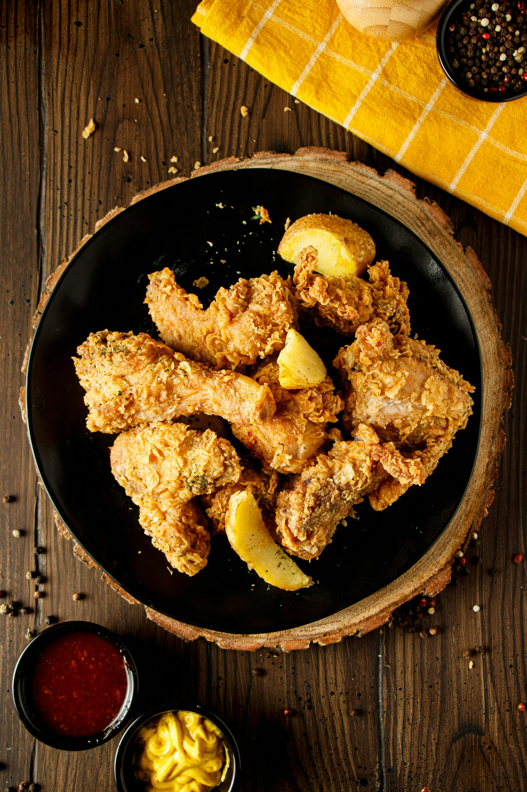

Thomas Kellar's Lemon-Brined Fried Chicken

This lemon-brined fried chicken recipe comes from Chef Thomas Keller's restaurant Ad Hoc, where it's only served twice a month. "People have a wonderful sense of anticipation," Keller says of the limited offering. I experienced this firsthand during culinary school when my roommate, a class mate and I made the pilgrimage to Napa Valley. Eating at Ad Hoc was the highlight of our trip, and this crispy, juicy chicken lived up to its legendary reputation
Ingredients
- 1 gallon cold water
- 1 cup plus 2 teaspoons kosher salt
- 1/4 cup plus 2 tablespoons honey
- 12 bay leaves
- 1 head of garlic, smashed but not peeled
- 2 tablespoons black peppercorns
- 3 large rosemary sprigs
- 1 small bunch of thyme
- 1 small bunch of parsley
- Finely grated zest and juice of 2 lemons
- Two 3-pound chickens
- 3 cups all-purpose flour
- 2 tablespoons garlic powder
- 2 tablespoons onion powder
- 2 teaspoons cayenne pepper
- 2 cups buttermilk
- Vegetable oil, for frying
- Rosemary and thyme sprigs, for garnish
Directions
- In a very large pot, combine 1 quart of the water with 1 cup of the salt and the honey, bay leaves, garlic, peppercorns, rosemary, thyme and parsley. Add the lemon zest and juice and the lemon halves and bring to a simmer over moderate heat, stirring until the salt is dissolved. Let cool completely, then stir in the remaining 3 quarts of cold water. Add the chickens, being sure they're completely submerged, and refrigerate overnight.
- Drain the chickens and pat dry. Scrape off any herbs or peppercorns stuck to the skin and cut each bird into 8 pieces, keeping the breast meat on the bone.
- In a large bowl, combine the flour, garlic powder, onion powder, cayenne and the remaining 2 teaspoons of salt. Put the buttermilk in a large, shallow bowl. Working with a few pieces at a time, dip the chicken in the buttermilk, then dredge in the flour mixture, pressing so it adheres all over. Transfer the chicken to a baking sheet lined with wax paper.
- In a very large, deep skillet, heat 1 inch of vegetable oil to 330°. Fry the chicken in 2 or 3 batches over moderate heat, turning once, until golden and crunchy and an instant-read thermometer inserted in the thickest part of each piece registers 160°, about 20 minutes. Transfer the chicken to paper towels to drain, and keep warm in a low oven while you fry the remaining chicken pieces. Transfer the fried chicken to a platter, garnish with the herb sprigs and serve hot or at room temperature.